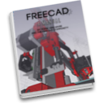
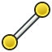
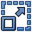

Manual:Traditional 2D drafting/es

- Introducción
- Descubriendo FreeCAD
- Trabajar con FreeCAD
- Guiones en Python
- La comunidad
El Entorno de Trabajo de Borrador de FreeCAD actúa como puente entre el dibujo 2D y el modelado 3D, lo que lo hace único en comparación con los sistemas CAD 2D tradicionales como AutoCAD. Si bien, FreeCAD opera en un entorno completamente 3D, este entorno está diseñado para brindar a los usuarios herramientas de dibujo 2D familiares, ofreciendo al mismo tiempo la flexibilidad de una transición fluida entre bocetos 2D y objetos 3D. Por ejemplo, se pueden configurar planos de trabajo personalizados para dibujar en superficies u orientaciones específicas, lo que permite la construcción de modelos paramétricos. Dado que FreeCAD es paramétrico, cualquier cambio realizado en las dimensiones se actualiza automáticamente en todo el proyecto.
Una de las ventajas de la especificidad de este ambiente de trabajo es su completo conjunto de herramientas, que incluye tanto herramientas básicas de dibujo como herramientas avanzadas de modificación. Estas herramientas se pueden usar no solo para dibujar en 2D, sino también para manipular objetos en el espacio 3D. Puede establecer planos de trabajo, definir cuadrículas y aplicar restricciones para garantizar que las relaciones geométricas se mantengan intactas en todo el diseño. Los objetos de dibujo se pueden modificar y recolocar mediante modos de ajuste y diversas restricciones, lo que facilita enormemente el dibujo preciso.
Algunas de las herramientas que se encuentran en el Entorno de Trabajo de Borrador:
- Herramientas de Dibujo:

Line, Wire (polilínea): Estas herramientas permiten crear segmentos de línea recta o polilíneas continuas, que se pueden restringir y convertir en formas 3D.- Círculo, Elipse y Arco: Se utilizan para definir formas circulares y elípticas básicas, con opciones para su posterior manipulación.
- Herramientas de manipulación:
- Mover, Rotar o

Escalar: Estas operaciones funcionan tanto en 3D como en 2D, ofreciendo flexibilidad en el posicionamiento de objetos. - Desplazar: De forma similar a los sistemas CAD tradicionales, permite crear líneas o curvas paralelas.
- Trimex y Estirar: Modifica líneas y formas recortándolas o extendiéndolas para que se intersecten o se encuentren con otros objetos.
- Mirror y
 Matriz: Estas herramientas replican y crean patrones de objetos, ideales para componentes repetitivos.
Matriz: Estas herramientas replican y crean patrones de objetos, ideales para componentes repetitivos.
- Mover, Rotar o
{kind=link}
{kind=link}
{kind=link}
{kind=link}
{kind=link}
{kind=link}
{kind=link}
{kind=link}
{kind=link}
{kind=link}
{kind=link}
{kind=link}
El sistema de ajuste del entorno borrador está diseñado para ofrecer precisión. Tanto en 2D como en 3D, puede ajustar elementos a puntos clave como extremos, puntos medios y centros de círculos, lo que facilita su posicionamiento relativo. Modos como el ajuste perpendicular, tangente y de intersección mejoran aún más la precisión. Combinadas con el plano de trabajo y el sistema de cuadrícula, estas herramientas garantizan la alineación precisa de objetos y componentes.
La naturaleza paramétrica de FreeCAD permite aplicar restricciones a los elementos dibujados, garantizando que las relaciones geométricas se mantengan intactas. Por ejemplo, se pueden crear líneas paralelas o perpendiculares y establecer distancias fijas entre elementos. Estas restricciones se pueden ajustar posteriormente, lo que facilita y homogeiniza los cambios de diseño en todo el proyecto. El entorno de trabajo Draft Workbench también se integra a la perfección con otros entornos de trabajo de FreeCAD, como Sketcher, diseñado para el diseño paramétrico 2D con mayores restricciones, y TechDraw, que genera dibujos técnicos 2D para fines de documentación.
Las funciones avanzadas en este ambiente incluyen la capacidad de importar y exportar archivos en formatos como DXF y SVG, lo que permite trabajar con diseños o compartirlos con usuarios de otros programas CAD. La programación en Python amplía aún más las capacidades de FreeCAD, permitiendo automatizar tareas o crear flujos de trabajo personalizados. Se pueden escribir guiones de programación (scripts) que generen objetos de dibujo basados en reglas geométricas específicas, agilizando así las tareas repetitivas.
Para mostrar el flujo de trabajo y las posibilidades del Entorno de Trabajo de Borrador, realizaremos un ejercicio sencillo, cuyo resultado será este pequeño dibujo que muestra el plano de una casa pequeña que contiene solo una encimera de cocina (un plano bastante absurdo, pero podemos hacer lo que queramos, ¿no?):
{kind=link}
- Cambie al Entorno de Trabajo de Borrador.
- Como en todas las aplicaciones de dibujo técnico, es recomendable configurar correctamente el entorno, ya que le ahorrará mucho tiempo. Si desea personalizar su experiencia en este entorno, puede hacerlo fácilmente ajustando diversas configuraciones en el panel de preferencias de este ambiente, en Editar → Preferencias → Dibujo técnico. Sin embargo, en este ejercicio, trabajaremos con la configuración predeterminada.
{kind=link}
- El panel de preferencias de Borrador en FreeCAD le permite personalizar varios aspectos de su entorno de dibujo 2D. En Configuración general, puede definir el plano de trabajo predeterminado, ajustar la precisión decimal y establecer el ancho, estilo y color de línea predeterminados para los objetos. La sección Cuadrícula y ajuste le permite controlar la visibilidad de la cuadrícula, el espaciado y los modos de ajuste, lo que permite una alineación y posicionamiento precisos de los elementos. Las opciones de Estilo visual le permiten personalizar la apariencia de los objetos y la cuadrícula, incluidos los colores de línea y relleno. En Texto y dimensiones, puede configurar el tamaño, la fuente y el color de texto predeterminados para las anotaciones, lo que garantiza la claridad en los dibujos técnicos.
{kind=link}
- Activar todos los botones de ajuste es práctico, pero también ralentiza el dibujo, ya que se requiere más cálculo al mover el cursor del ratón. A menudo es mejor mantener solo los que realmente vaya a usar.
- Comencemos activando el modo de construcción, que nos permitirá dibujar algunas guías sobre las que trazaremos la geometría final. Para ello, pulse el comando Alternar al modo de construcción.
{kind=link}
- Si lo prefiere, puede establecer el plano de trabajo en XY. Esto bloqueará el plano de trabajo, asegurando que permanezca en el plano XY, independientemente de cómo cambie la vista. Si decide no hacerlo, el plano de trabajo se adaptará automáticamente a la vista actual, por lo que deberá asegurarse de estar en la vista superior siempre que desee dibujar en el plano XY (suelo) para evitar cambios de orientación involuntarios.
Comencemos por definir la forma básica de nuestro plano.
- Pulse el botón Dibujo de rectángulo
- Dibuje un rectángulo de 2 metros x 2 metros partiendo del punto (0,0,0), dejando la coordenada Z en cero. Puede completar todo este proceso de forma eficiente usando el teclado, sin necesidad del ratón. Simplemente escriba:
- re, Intro, Intro, Intro, 2m, Intro, 2m, Intro, 0 y Intro.
{kind=link}
Este flujo de trabajo mediante teclado acelera el dibujo, especialmente al trabajar con tareas repetitivas o que requieren precisión, lo que lo hace ideal para usuarios que buscan optimizar su flujo de trabajo. Puede ver las pulsaciones de teclas de cada objeto al pasar el cursor sobre el botón correspondiente.
- Duplique ese rectángulo 15 cm hacia adentro, usando la herramienta Offset, activando su modo Copiar y dándole una distancia de 15 cm:
{kind=link}
- A continuación, podemos dibujar un par de líneas verticales para definir la ubicación de nuestras puertas y ventanas, utilizando la herramienta Líinea (tenga en cuenta que la casilla de modo "relativo" debe estar desactivada para este paso). El cruce de estas líneas con nuestros dos rectángulos nos proporcionará intersecciones útiles para ajustar las paredes. Dibuje la primera línea definiendo los siguientes puntos:
- P1 (15 cm, 1 m, 0) y P2 (15 cm, 3 m, 0).
- Ahora duplicaremos esta línea 5 veces. Pulse la herramienta Mover con el Modo Copiar activado. Asegúrese de que el Modo Relativo esté habilitado. El modo Copia garantiza que cada movimiento cree una nueva línea en lugar de desplazar la original, mientras que el modo Relativo permite definir movimientos basados en distancias relativas, facilitando el posicionamiento sin necesidad de calcular coordenadas exactas. Comience seleccionando la línea original e inicie la operación de movimiento eligiendo cualquier punto de partida, como (0,0,0). Después de cada movimiento, realice la siguiente operación en la línea recién creada, de modo que cada copia se base en la anterior. Defina los puntos finales relativos para cada nueva línea.
- línea001: x: 10 cm
- línea002: x: 120 cm
- línea003: x: -55 cm, y: -2 m
- línea004: x: 80 cm
- línea005: x: 15 cm
{kind=link}
Eso es todo lo que necesitamos ahora para desactivar el modo de construcción. Compruebe que toda la geometría de construcción se haya colocado en un grupo de "Construcción", lo que facilitará ocultarla de una vez o incluso eliminarla por completo más adelante.
Ahora vamos a dibujar nuestras dos piezas de pared usando la herramienta Cable. Asegúrese de que la opción Ajuste de intersección esté activada, ya que necesitaremos ajustarnos a las intersecciones de nuestras líneas y rectángulos. Dibuje dos polilíneas como se muestra a continuación, haciendo clic en todos los puntos de sus contornos. Para cerrarlos, haga clic de nuevo en el primer punto o pulse el botón Cerrar:
{kind=link}
{kind=link}
- Podemos darle a las paredes un bonito patrón de sombreado. Seleccione ambas paredes, asegúrese de que su propiedad Make Face (ubicada en la pestaña Datos) esté establecida en TRUE, luego establezca su propiedad Pattern (ubicada en la pestaña Vista) en Simple, y su Pattern size a su gusto, por ejemplo 0.01.
{kind=link}
- Ahora podemos ocultar la geometría de construcción haciendo clic con el botón derecho en el grupo Construcción y seleccionando Ocultar selección.
- Ahora vamos a dibujar las ventanas y las puertas. Asegúrese de que la opción Punto medio esté activada y dibuje seis líneas como se muestra a continuación:
{kind=link}
{kind=link}
- Ahora cambiaremos la línea de la puerta para crear un símbolo de puerta abierta. Comience rotando la línea con la herramienta Rotación. Haga clic en el extremo de la línea como centro de rotación; luego especifique un ángulo base de 0 y una rotación de -90.
- A continuación, cree el arco de apertura con la herramienta Arco. Seleccione el mismo punto que usamos como centro de rotación en el paso anterior, haga clic en el otro punto de la línea para definir el radio y, a continuación, defina los puntos inicial y final de la siguiente manera:
{kind=link}
Ahora podemos empezar a colocar algunos muebles. Para empezar, coloquemos una encimera dibujando un rectángulo desde la esquina superior izquierda interior, con un ancho de 170 cm y una altura de -60 cm. En la imagen de abajo, la propiedad Transparencia del rectángulo está configurada al 80%, para darle un aspecto de mueble.
A continuación, añadamos un fregadero y una placa de cocina. Dibujar este tipo de símbolos a mano puede ser muy tedioso, y suelen ser fáciles de encontrar en internet, por ejemplo, en http://www.cad-blocks.net. En la sección Descargas que aparece más abajo, para mayor comodidad, hemos separado un fregadero y una placa de cocina de este proyecto y los hemos guardado como archivos DXF. Puede descargar estos dos archivos visitando los enlaces que aparecen más abajo, haciendo clic con el botón derecho en el botón Raw y seleccionando Guardar como.
- Para insertar un archivo DXF en un documento FreeCAD abierto, puede seleccionar la opción de menú Archivo → Importar o arrastrar y soltar el archivo DXF desde el explorador de archivos a la ventana de FreeCAD. Es posible que el contenido de los archivos DXF no aparezca centrado en la vista actual, dependiendo de su ubicación en el archivo. Puede usar el menú Vista → Vistas estándar → Ajustar todo para alejar la vista y encontrar los objetos importados. Inserte los dos archivos DXF y colóquelos en una ubicación adecuada en el área de trabajo.
{kind=link}
Ahora podemos colocar un par de cotas usando la herramienta Dimensión. Para crear una cota, primero seleccione tres puntos: el primero establece el inicio de la medición, el segundo define el punto final y el tercero determina dónde se colocarán la línea de cota y el texto. Al hacer clic con cuidado en estos puntos, se asegura de que la cota represente con precisión la distancia entre los dos puntos seleccionados. Si desea que la cota sea perfectamente horizontal o vertical, incluso si los puntos inicial y final no están alineados, mantenga presionada la tecla Mayús mientras hace clic en el segundo punto. Esto bloquea la cota en la orientación deseada. Puede refinar aún más la cota ajustando propiedades como el tamaño del texto, la precisión y el color en el panel de propiedades, asegurándose de que las cotas se ajusten a los estándares visuales y técnicos de su proyecto.
{kind=link}
Puede cambiar la posición del texto de una cota haciendo doble clic en la cota en la vista de árbol. Un punto de control le permitirá mover el texto gráficamente. En nuestro ejercicio, los textos "0.15" se han movido para mayor claridad.
- Puede cambiar el contenido del texto de las dimensiones editando su propiedad Override. En nuestro ejemplo, los textos de las dimensiones de la puerta y la ventana se han editado para indicar sus alturas:
{kind=link}
- Añadamos textos descriptivos con la herramienta Texto. Haga clic en un punto para situar el texto y, a continuación, introduzca el mismo, pulsando Intro después de cada una. Para finalizar, pulse Intro dos veces.
{kind=link}
- Las líneas de referencia (también llamadas "líneas guía") que unen los textos con el elemento que describen se crean fácilmente con la herramienta Cable. Dibuje cables desde la posición del texto hasta el lugar que se describe. Una vez hecho esto, puede añadir una viñeta o una flecha al final de los cables estableciendo su propiedad Flecha final en VERDADERO.
{kind=link}
¡Nuestro dibujo ya está completo! Dado el número de objetos que se han creado en el diseño, una buena idea es ordenar y reestructurarlos un poco antes de darlo por terminado. Organizar todo en grupos claros y lógicos no solo ayudará a mantener el proyecto bien estructurado, sino que también facilitará considerablemente la navegación y comprensión del archivo para los demás. Al agrupar elementos relacionados, como muebles, electrodomésticos o elementos arquitectónicos, se puede simplificar la disposición y mejorar la claridad del diseño. Esto también hará que las futuras modificaciones o ajustes sean mucho más manejables, especialmente si el proyecto necesita ser compartido o de tipo colaborativo. Además, una estructura limpia garantiza que cualquier persona que revise el dibujo pueda localizar rápidamente elementos específicos sin tener que rebuscar en un espacio de trabajo desordenado, lo que contribuye a un producto final más profesional y pulido. Dedicar un poco tiempo a la organización de los objetos justo al terminar el proyecto puede ahorrar mucho tiempo y esfuerzo más adelante.
{kind=link}
Ahora podemos imprimir nuestro trabajo colocándolo en una hoja de dibujo, que mostraremos más adelante en este manual, o exportarlo directamente a otras aplicaciones CAD, exportándolo a un archivo DXF. Simplemente, seleccione el grupo "Plano de planta", seleccione el menú Archivo → Exportar y seleccione el formato Autodesk DXF. El archivo se puede abrir en cualquier otra aplicación CAD 2D, como LibreCAD. Es posible que observe algunas diferencias, dependiendo de la configuración de cada aplicación.
{kind=link}
- El aspecto más importante del Entorno de Trabajo Draft es que la geometría 2D que diseñe pueda servir como base para crear objetos 3D. Puede extruir fácilmente estas formas en 3D usando la herramienta Part Extruir que se encuentra en el Part Workbench. Si prefiere permanecer dentro del Entorno de Trabajo Borrador, puede usar la herramienta Trimex, que combina las funcionalidades de recorte, extensión y extrusión. La herramienta Trimex realiza esencialmente una extrusión de piezas internamente, pero lo hace "a la manera Borrrador", lo que le permite indicar visualmente y ajustar la longitud de extrusión, brindándole mayor control y precisión cuando trabaja directamente en su entorno de dibujo. Esta flexibilidad facilita una transición fluida e intuitiva de 2D a 3D, especialmente para quienes están familiarizados con los flujos de trabajo 2D, a la vez que ofrece capacidades avanzadas de modelado 3D.
{kind=link}
- Al pulsar el botón Plano de trabajo, tras seleccionar una cara de un objeto, también puede colocar el plano de trabajo en cualquier lugar y, por lo tanto, dibujar objetos Boceto en diferentes planos, por ejemplo, sobre las paredes. Estos se pueden extruir para formar otros sólidos 3D. Experimente colocando el plano de trabajo en una de las caras superiores de las paredes y dibuje algunos rectángulos allí.
{kind=link}
{kind=link}
- También se pueden crear todo tipo de aberturas fácilmente dibujando objetos Boceto en las caras de las paredes, extruyéndolos posteriormente y luego utilizando las herramientas booleanas del Entorno de trabajo de Piezas para restarlos de otro sólido, como vimos en el capítulo anterior.
Fundamentalmente, el Entorno de Trabajo de Borrador ofrece un enfoque más gráfico e intuitivo para realizar operaciones básicas, similares a las del Entorno de Trabajo de Pieza. En este último, la ubicación de objetos suele implicar el ajuste manual de parámetros como los valores de Posicionamiento (posición, rotación, etc.), lo que proporciona un control preciso, pero a veces puede resultar menos intuitivo, sobre todo para ediciones rápidas. En cambio, el Entorno de Trabajo de Borrador permite realizar estas mismas operaciones visualmente en pantalla, facilitando el movimiento, la rotación y la manipulación de objetos directamente en el espacio de trabajo mediante herramientas de ajuste y opciones de posicionamiento relativo.
Esta diferencia radica en cómo se complementan los distintos entornos de trabajo. El entorno Borrador es ideal para un diseño rápido e interactivo, ya que permite dibujar y colocar objetos sin necesidad de introducir constantemente valores numéricos precisos. Por otro lado, el entorno Parte ofrece un control paramétrico más detallado sobre las propiedades de los objetos, lo que lo hace más adecuado para ajustes de alta precisión, especialmente en proyectos de ingeniería o diseño técnico.
La ventaja de FreeCAD es que no tiene que elegir entre una u otra opción. Puede crear barras de herramientas personalizadas combinando herramientas de los entornos de trabajo de Boceto y Pieza, lo que le brinda la flexibilidad de alternar entre métodos gráficos y paramétricos según sea necesario. Esto le permite disfrutar de lo mejor de ambos mundos: ajustes rápidos en pantalla del entorno de trabajo de Dibujo y la precisión del entorno de trabajo de Pieza, según las necesidades de su proyecto. Además, el uso de atajos de teclado y barras de herramientas personalizadas puede agilizar su flujo de trabajo, facilitando la transición entre diferentes operaciones sin interrumpir el proceso de diseño.
Descargas
- Archivo creado durante este ejercicio: https://github.com/yorikvanhavre/FreeCAD-manual/blob/master/files/cabin.FCStd
- Archivo DXF del fregadero: https://github.com/yorikvanhavre/FreeCAD-manual/blob/master/files/sink.dxf
- Archivo DXF de la placa de cocina: https://github.com/yorikvanhavre/FreeCAD-manual/blob/master/files/cooktop.dxf
- Archivo DXF final generado durante este ejercicio: https://github.com/yorikvanhavre/FreeCAD-manual/blob/master/files/cabin.dxf
Relacionado